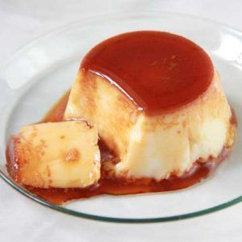

Recetas Dulces
Bienvenidos a recetas dulces!! A continuacion van a poder encontrar gran variedad de recetas simples y practicas.
Flan casero con 12 huevos

Ingredientes
- 12 huevos
- 750 cc de leche
- 350 g de azucar
- Azucar extra para el caramelo
- Esencia de vainilla
- Dulce de leche
- Crema chantilly
Procedimiento
- Hacer un caramelo y colocarlo en el molde de flan.
- Romper los huevos en un bowl y mezclar ligeramente sin batir para no integrar aire.
- Agregar el azucar y seguir mezclando constantemente. Agregar tambien la leche de a poco.
- Verter la preparacion en el molde sobre una placa a baño maria.
- Cocinar durante 40 minutos. Dejar enfriar a temperatura ambiente.
- Desmoldar y servir con dulce de leche y/o crema.